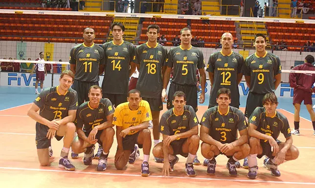
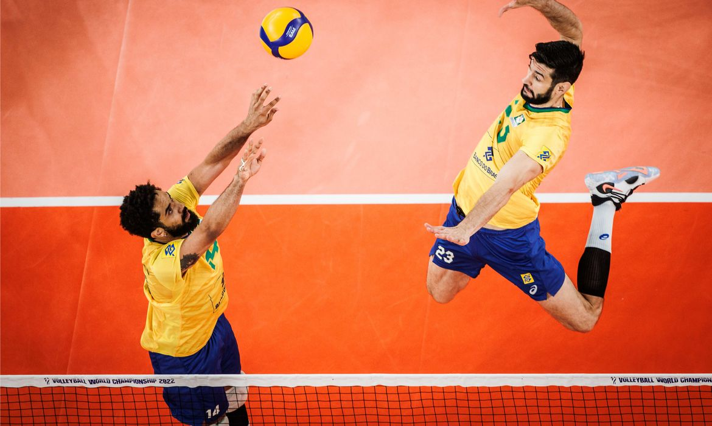

voleibol
seleção brasileira nas Olimpiadas
 ricardo garcia
Sua trajetória na Seleção iniciou-se em 1997, quando foi convocado pela primeira vez.
A seleção brasileira de vôlei masculina, treinada por Bernardinho, foi apontada como uma das melhores da história mundial. A equipe conseguiu esse reconhecimento com as jogadas geniais de Ricardinho, que abusava da variação de jogadas e da velocidade. O treinador apontou o jogador como um dos principais responsáveis pela conquista da medalha de ouro em Atenas 2004.